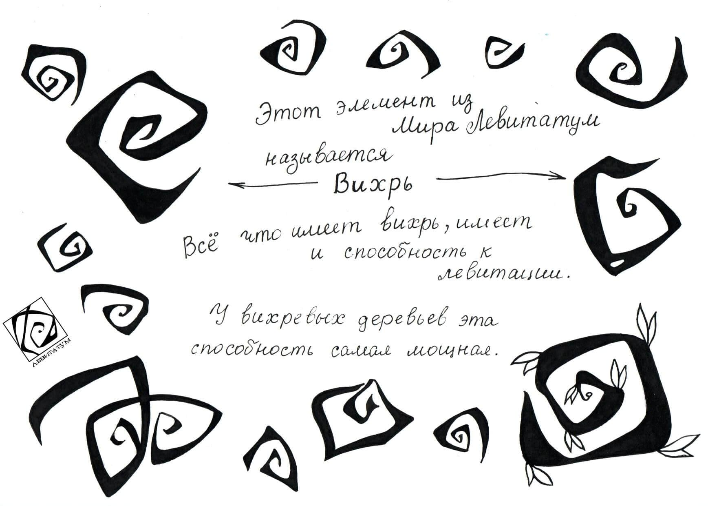
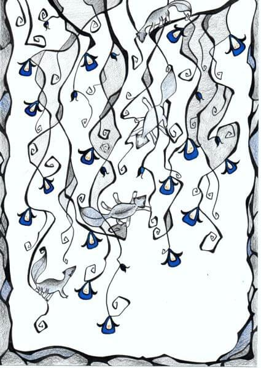
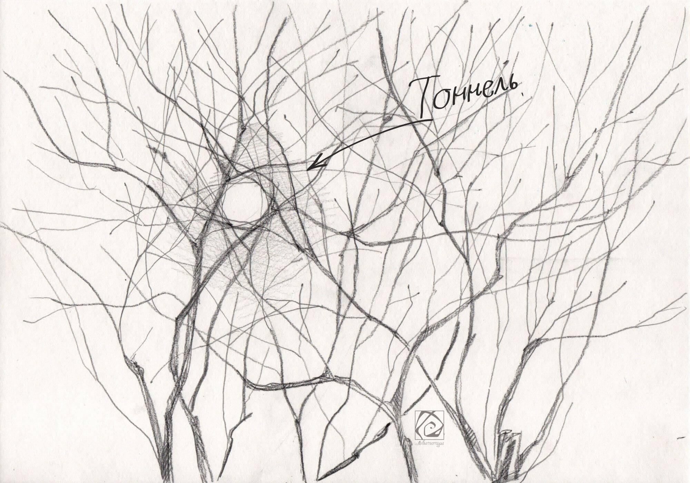

Мой Мир

У меня есть одна необычная способность.
Я вижу другой мир.
Он сильно отличается от нашего и населён разнообразной жизнью.
Первый раз я обнаружила его ещё в детстве и тогда же поняла, что больше никто его не видит.
Этот удивительный мир я назвала - Левитатум. За многие годы у меня накопились образы, истории, наблюдения, которыми пришло время поделиться с вами.
Они

Заглядывая в мир Левитатум, я чаще вижу вот этих существ.
Они самая многочисленная форма жизни.
Как их зовут

Никому не рассказывая о мире Левитатум, мне не было нужды именовать его обитателей. Когда же появилось желание делиться этими историями, я поняла, что нужно будет их как-то называть.
Около года я ломала голову и подбирала варианты названий главным жителям мира Левитатум. Их было сотни.. Я пробовала разные подходы. Искала в других языках. Миксовала слова. Пробовала случайный подбор букв. Все тщетно! Ни один вариант так и не лёг, не прижился.
Несколько раз я забрасывала эту идею «на дальнюю полку», надеясь, что подсознание все сделает само. Знаете, так бывает? Этот трюк так же не помог.
Ах, так! – обижалась я, - Не хотите называться, останетесь просто Неведомыми Зверюшками!
Но скоро, с энтузиазмом, вновь пыталась понять, как же называются они на человеческом?
И вот сегодня, как раз к запланированному посту (концовка которого должна была быть другой) я наконец поняла что они..
.. Левитяне! А если ласково – Левитятки))) И никак иначе )))
И ведь это слово лежало на поверхности.
О ягодных насекомышах

В Мире Левитатум, на пышных ягодных кустах, живут особые насекомыши. Особенность их в том, что при контакте со слюной они способны устраивать микровзрывы. Поэтому, собирая ягоду, так важно их вытряхивать и вообще глядеть в оба! Маленькие взрывы во рту никого не обрадуют.
Из этой особенности насекомышей возникло веселое развлечение: молодые Левитятки подходят к кусту и оплёвывают его, вызывая серию микровзрывов. Ночь – лучшее время для этой забавы.
Острова

Не могу сказать, что знаю о Мире Левитатум всё.
Я вижу его как бы сквозь мутное стекло или толщу воды. Иногда чётко проступают подробности и частные детали. В другой раз удаётся охватить и понять общую картину мироустройства.
Мир Левитатум открывался, и продолжает открываться мне, постепенно.
Первое что я о нём когда-то поняла: это мир левитирующих островов, отсюда и название. На каждом острове обязательно растёт вихревое дерево. Правильнее было бы сказать, что это деревья отращивают себе острова.
Дело в том, что именно вокруг молодых корешков начинает накапливаться земля. Разрастается дерево, разрастается и остров.
Острова бывают разных размеров. Иногда они соединяются. Кроме главного дерева, на острове могут жить и другие растения. Но без вихревого дерева не бывает островов. Когда вихревое дерево умирает, остров рассыпается. Умирание, как и зарождение островов, это крайне редкое явление.
Мир Левитатум – мир симбиоза*, всё живое состоит в разнообразных сложных и неразрывных связях друг с другом, впрочем, так и в нашем с вами мире, но в Левитатуме эта связь гораздо явственнее. Вихревые деревья и Левитяне – основные существа-симбионты.
*симбиоз, это наиболее подходящее понятие из известных мне.
Вихрь

Этот элемент из Мира Левитатум называется - вихрь.
Все что имеет вихрь, имеет способность к левитации.
У вихревых деревьев эта способность самая мощная.
Как они общаются?

Активной речи у Левитян я не наблюдала, но действуют они всегда слажено. У них очень развит язык тела. Неуловимые для непривыкшего человеческого глаза жесты, выражение мордочки, положение хвоста и всем всё становиться понятно!
Издаваемые ими звуки похожи на покашливание. Тихое и нежное. Мир Левитатум вообще довольно тихое место.
Мордочки Левитян
Левитяне очень похожи, но только на первый взгляд. Сегодня хочу показать вам мордочки Левитян поближе. Они вполне очаровательны: широкий лобик, аккуратный носик и умные блестящие глаза.
Ночь и День
В мире Левитатум день не сменяется ночью, а ночь днём. Ночь и день существуют одновременно. Пространство поделено на светлую и звёздную части.
Когда Левитяне понимают, что острову пора отдохнуть, они всей стайкой садятся на верхушку главного Вихревого Дерева и начинают его раскачивать, пока весь остров не переворачивается на ночную сторону. Центр гравитации в этом мире находится в корнях, поэтому верхушка всегда вверху.
Кувыркнув остров в ночь, Левитяне устраиваются на удобной ветке по несколько штук и сладко спят. Выспавшись, они снова скапливаются на верхушке дерева и меняют положение на дневное.
Раскачивание острова
Прошлый раз я рассказала и показала, как Левитятки спят. Новая картинка иллюстрирует, как они скапливаются на вершине дерева, начиная его раскачивать.
Листовей
В мире Левитатум нет привычных нам облаков, нет дождя, снега, зноя. Там всегда одинаково тепло на светлой стороне и немного прохладнее на звёздной. Этот мир не является планетой, поэтому в нём не бывает цикличной смены погоды.
Но там, как и у нас есть Ветер. Этот Ветер похож на наши ветра, но служит он необычным целям и появляется необычным образом. И вот как это происходит...
Одновременно, на разных островах Левитяне начинают выращивать особые растения – Листовеи. У Листовеев гибкие и упругие стебли, они стелятся по земле и могут быть очень длинными. Когда на стеблях раскрываются первые ажурные листы, из дозревающих почек начинает сочиться Ветер, всё сильнее и сильнее.
Сплетаясь с другими потоками, Ветер набирает силу. И вот уже мощные широкие струи приводят в движение острова! Начинается самое веселье! Крупные острова, несутся, раскачиваясь, подхваченные Ветром, легко, словно пушинки! Что уж говорить о средних островах и островках-малютках, которые и вовсе кувыркаются и кружатся как сумасшедшие! Тут только держись! Но многие существа и не думают держаться, они рады увлечься танцем Ветра! В апогее этого веселого безумия мир Левитатум похож на мешанину крутящихся островов и кружащихся существ. Всё путается, вращается и кувыркается! Всё несется кубарем, закручивается по спирали, сближается и разлетается! И восторгу нет предела! Острова, семена, насекомыши, Левитяне и другие обитатели мира самозабвенно отдаются на волю Ветра.
Когда все листья Листовея раскрываются, ветер стихает.
Мир Левитатум обновлён.
Мир Левитатум снова становиться спокойным и умиротворенным местом.
Как Левитяне попадают в наш мир
Левитяне очень любопытные создания. Им не сидится на месте настолько, что они даже путешествуют по мирам.
И на Землю тоже!
Когда у одного какого-нибудь левитёнка накапливается достаточно много любопытства, он ищет особый Вихрь на особом Вихревом Дереве и просто идёт по спирали, к самому центру, пока не исчезает…

На другом конце мироздания, где-то, совсем далеко от мира Левитатум, живёт своей интересной, непонятной, незнакомой левитянам жизнью, прекрасная голубая планета. А на ней неприметная я. И вот когда левитянин уходит из своего мира, в тот же миг, у меня на душе как-то по-особому теплеет. Я понимаю, что нужно бежать на улицу и искать в кронах деревьев, в самой путанице ветвей Тоннель. Как только глаз его отмечает, левитёнок проскакивает в наш мир прямо мне в руки! Такой тёплый, живой и по-особому невесомый. Мы обнимаемся, знакомимся, он гостит у меня какое-то время, а потом непременно отправляется узнавать наш мир во всем его великолепии.
Чаще всего переход выпадает на утро. На самое его начало. Когда притихшая и отдохнувшая природа, еще не набрала цвет бурного дня. Когда ночные жители уже уснули, а дневные только-только приоткрыли глазки.
Вот так выглядит Тоннель, я нарисовала его для вас. А вот попытки его сфотографировать были неудачными. На фотографиях он засвечивается или «рассыпается» не образуя заметного кольца из ветвей. Волшебство не терпит посредников между собой и глазом.
Такие тоннели не редкость, главное найти правильный ракурс. Попробуйте отыскать его, вдруг и вас ждёт приятная встреча)))
Вот так выглядят Левитяне когда попадают в наш мир
О цвете в мире Левитатум
Вы видите мир Левитатум на моих рисунках чёрно-белым. Таким его вижу и я, когда рассматриваю внутренним зрением. Иногда в картинки я от себя добавляю цвет.
Но все прибывшие сюда Левитяне цветные. И невозможно понять, принимают ли они цвета этого мира, попадая сюда, или же Левитатум полноцветный мир, просто его краски не видны отсюда.
Их глаза
У Левитян добрые умные и весёлые глазки. В своём мире они блестящие и тёмные, а при переходе к нам в их глазах навсегда остаётся отражение родного дома.
Развлечения. Качели.
Излюбленное времяпрепровождение Левитян – активные игры.
Например – качели!
Подбираются подходящие упругие ветви с вихрями на конце… и вперёд! Тут важную роль выполняет хвост. При этом лапки расслабленно болтаются вверх-вниз, перед глазами сливается прыгающий мир, а в голове искриться веселье! Кто выше? Кто ниже? Кто дольше? Умение раскачаться – врождённый талант))))
Следы
Кроме левитян мир Левитатум населён и другими созданиями. С одной из разновидностей насекомышей вы уже знакомы. Постепенно я покажу вам тех, кто попался мне на глаза, а сегодня следы кого-то, кто не попался )))
Откуда берутся Левитяне
Приходит время, когда звездную часть мира Левитатум пересекает широкими потоками Туман. Он несёт в себе поющих туманных Рыб. Явление это красивое и волшебное. Песни Рыб - это музыка разнообразных миров, через которые они когда-либо проплывали. Рыбы запомнили мотив и вплели в свою чешую, при движении она звучит загадочно и мелодично.
Величественно, медленно туман пересекает мир Левитатум, конденсируясь на вихрях готовых принять росу. В капле начинает отражаться и преломляться звёздный свет. В этот свет вплетаются гармоничные песни рыб. И от этой встречи звука и света, в капле принятой вихрем, зарождается жизнь Левитёнка.
Потоки тумана покидают мир Левитатум, унося с собою волшебных поющих рыб. А остров остаётся перевернутым на звездную сторону пока жизнь в капле крепнет и развивается. Все это время Левитяне усиленно ухаживают за вихревым деревом, хранящим молодую жизнь. А так же они выращивают светлячковые цветы и переносят с других островов светлячковых насекомых. Их свет, вместе со светом звезд подпитывает волшебство зародившейся жизни.
Когда Левитенок перестает светиться и звучать, а росинка темнеет, остров переворачивают на светлую сторону. Капля впитывается в вихрь, а новенький Левитёнок попадает в теплую компанию заждавшихся его соплеменников)))
(Возможно, способ их происхождения объясняет тягу к другим мирам.)
Поющие Туманные Рыбы
Светлячковые растения. Всёсемечко. Как Левитяне выращивают растения.

Когда нужно вырастить растение, Левитяне спускаются к корням Главного Вихревого Дерева и выискивают среди них Всёсемечко.
Всёсемечко это такое семечко, из которого может вырасти всё что угодно. Как же такое возможно? Дело в том, что всёсемечко совершенно не знает, чем оно может быть. Но Быть оно очень хочет.
Левитята забирают его, кладут на нужное место в землю, а сами собираются вокруг. Тут они становятся особенно довольными на вид, прикрывают глазки и начинают мечтать, воображать, представлять, показывая семечку каким быть.
Это как если бы вы пожелали чтобы вырос огурец и вырос бы огурец. А задумали бы помидор, из этого же семечка вырос бы помидор. Или арбуз. Или ель! Или малина!
В этот раз Левитяне задумали вырастить Светлячковые растения. О них вы уже читали в предыдущей истории «Откуда берутся Левитяне», а теперь можете и посмотреть.
Когда всёсемечко прорастает Левитяне не оставляют его, а продолжают заботиться. И не только ведут его рост и развитие мыслью, но и поглаживают, любуются им. А еще разминают почву лапками. Любования и прикосновения особенно нужны молодому ростку, но и взрослые растения получают от Левитян свою порцию внимания.
Левитяне могут ускорять или притормаживать рост растений своего мира. Могут формировать их и выбирать размер. Могут задумать и вырастить растение любого вида и свойства.
От того что остров создан мыслями и заботами Левитян они неразрывно связаны и зависимы. Сами же Левитяне берут своё начало от Вихревого дерева. Порядок вещей в Левитатуме замкнут на самом себе, одно происходит от другого. Причины и следствия замысловато переплетаются. Мир левитирующих островов как целый организм. Он живет на волшебстве и зависимости друг от друга всего, что вмещает.